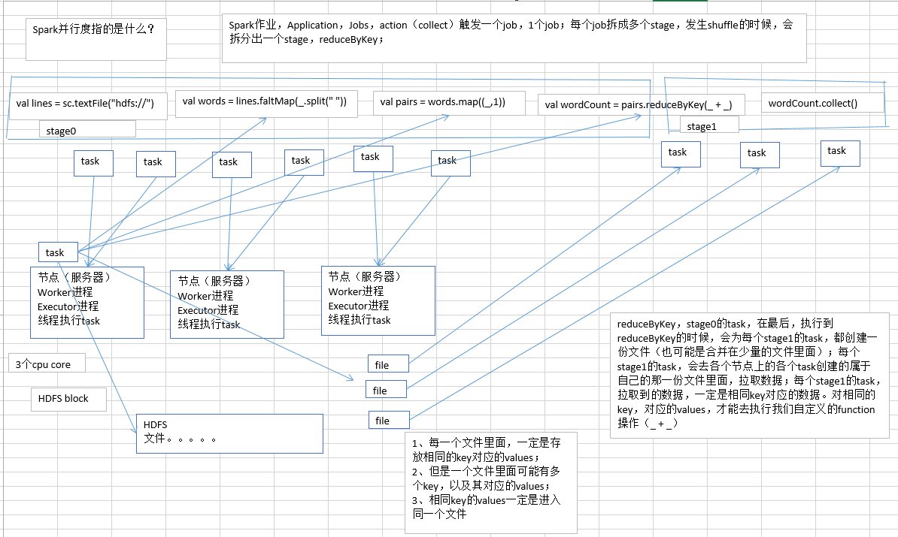

2.性能调优之在实际项目中调节并行度
先以wordcount为例：

并行度
其实就是指的是，Spark作业中，各个stage的task数量，也就代表了Spark作业的在各个阶段（stage）的并行度。
如果不调节并行度，导致并行度过低，会怎么样？
总结以下内容：可能出现并行度与资源不匹配导致浪费了资源 简短说明下面的案例：有50个executor，每个有10G内存，3个cpu，可以支持150个task，但是如果并行度只有100，那么就浪费了50个cpu浪费了。
假设，现在已经在spark-submit脚本里面，给我们的spark作业分配了足够多的资源，比如50个executor，每个executor有10G内存，每个executor有3个cpu core。基本已经达到了集群或者yarn队列的资源上限。
task没有设置，或者设置的很少，比如就设置了，100个task。50个executor，每个executor有3个cpu core，也就是说，你的Application任何一个stage运行的时候，都有总数在150个cpu core，可以并行运行。但是你现在，只有100个task，平均分配一下，每个executor分配到2个task，ok，那么同时在运行的task，只有100个，每个executor只会并行运行2个task。每个executor剩下的一个cpu core，就浪费掉了。
你的资源虽然分配足够了，但是问题是，并行度没有与资源相匹配，导致你分配下去的资源都浪费掉了。
合理的并行度的设置，应该是要设置的足够大，大到可以完全合理的利用你的集群资源；比如上面的例子，总共集群有150个cpu core，可以并行运行150个task。那么就应该将你的Application的并行度，至少设置成150，才能完全有效的利用你的集群资源，让150个task，并行执行；而且task增加到150个以后，即可以同时并行运行，还可以让每个task要处理的数据量变少；比如总共150G的数据要处理，如果是100个task，每个task计算1.5G的数据；现在增加到150个task，可以并行运行，而且每个task主要处理1G的数据就可以.
很简单的道理，只要合理设置并行度，就可以完全充分利用你的集群计算资源，并且减少每个task要处理的数据量，最终，就是提升你的整个Spark作业的性能和运行速度。
官方推荐：
task数量，至少设置成与Spark application的总cpu core数量相同（最理想情况，比如总共150个cpu core，分配了150个task，一起运行，差不多同一时间运行完毕）
官方是推荐，task数量，设置成spark application总cpu core数量的2~3倍，比如150个cpu core，基本要设置task数量为300~500；
实际情况，与理想情况不同的，有些task会运行的快一点，比如50s就完了，有些task，可能会慢一点，要1分半才运行完，所以如果你的task数量，刚好设置的跟cpu core数量相同，可能还是会导致资源的浪费，因为，比如150个task，10个先运行完了，剩余140个还在运行，但是这个时候，有10个cpu core就空闲出来了，就导致了浪费。那如果task数量设置成cpu core总数的2~3倍，那么一个task运行完了以后，另一个task马上可以补上来，就尽量让cpu core不要空闲，同时也是尽量提升spark作业运行的效率和速度，提升性能。
3、如何设置一个Spark Application的并行度？
spark.default.parallelism
SparkConf conf = new SparkConf()
.set("spark.default.parallelism", "500")
实用：大部分时候，可能资源和并行度到位了，spark作业就很快了!!!
“炫酷”其实不实用：数据倾斜（100个spark作业，最多10个会出现真正严重的数据倾斜问题）；JVM调优；